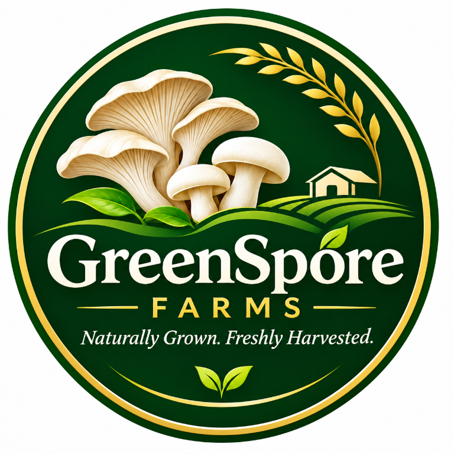

Clean, separated workflows
Keep raw straw handling apart from clean packing, and make hygiene, ventilation, and room cleaning part of the daily routine.

GreenSporeFARMSAbout GreenSpore Farms
A proposed, right-sized mushroom cultivation pilot rooted in clean processes, practical planning, and local learning.
GreenSpore Farms is planning its first cultivation project near Kanipakam in Andhra Pradesh. The initial crop mix is deliberately focused on Oyster and Milky mushrooms grown on paddy straw, with separate spaces for incubation, fruiting, preparation, and packing.
The first cycle is a pilot, not a promise of commercial output. Small trials, careful batch records, and buyer conversations will help validate the local strains, production method, yields, costs, and demand before any expansion.
How we plan to work
Keep raw straw handling apart from clean packing, and make hygiene, ventilation, and room cleaning part of the daily routine.
Track temperature, humidity, contamination, inputs, labour, harvest weight, and sales for each crop batch.
Validate production and repeat demand first; make larger infrastructure or automation decisions using actual operating data.
Location and market
The project concept is planned for an 800 sq ft plot near Kanipakam, Andhra Pradesh. Tirupati and Bengaluru are proposed markets to investigate; buyer demand, sale prices, packaging, and delivery arrangements still need local validation.